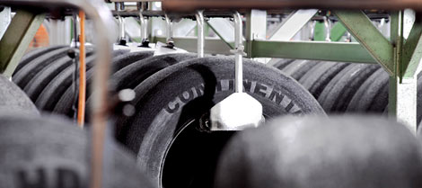

ZTR Corporation is the leading tyre retreading company in Gurgaon (Delhi NCR) India and has more than 3 decades of experience in the field of retreading. The company has seen year on year sales growth of 30% for the last two years and is projecting sales growth of 50% for the next year. ZTR Corporation works closely with its customers to meet changing requirements.
ZTR Corporation uses Highly durable & Procured treads which provide High Mileage & Trouble free retreaded tyre. ZTR retreaded tyre has Warranty against all defects in material and workmanship. ZTR Corporation adheres to strict quality control methods for all products through rigorous endurance tests conducted regularly in our well equipped lab.
ZTR Corporation provide tyre retreading (Hot & Cold Retread) service of all sizes of tyres i.e Trucks & Trailer, Buses, JCB, Tractor and Light Commercial Vehicles in Gurgaon & Delhi NCR regions. These tyres are specially retreaded for higher load capacity and better road grip. Our retreaded tyres range is made from durable & tough rubber compounds resulting in better mileage and durability.
Rigorous endurance tests conducted regularly ensure the safety of retreaded tyres.
Reuse of the casing reduces energy and raw material consumption by up to 70%
Compared to new brand tyres, price of retreaded tyres is between 30% and 45% lower.
The life of the retreaded tyre is approximately 60-80 percent of the life of a new tyre
| Address | M/s ZTR Corporation Plot No - 120, Basai Road, Near Enkay Rubber Factory, Gurgaon - 122001, Haryana, India |
| ztr.corp@gmail.com |
ZTR Corporation provide tyre retreading service of all sizes of tyres i.e Trucks & Trailer, Buses, JCB, Tractor, OTR , Farm tyre and Light Commercial Vehicles which have complete warranty against all defects in material and workmanship.